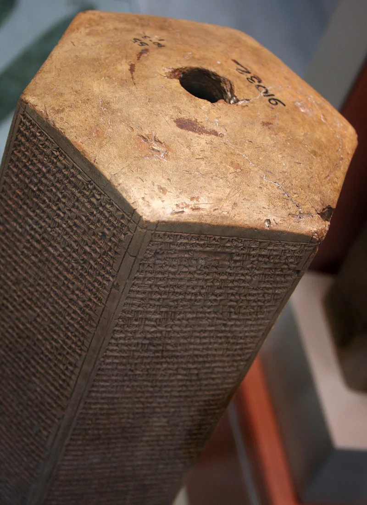
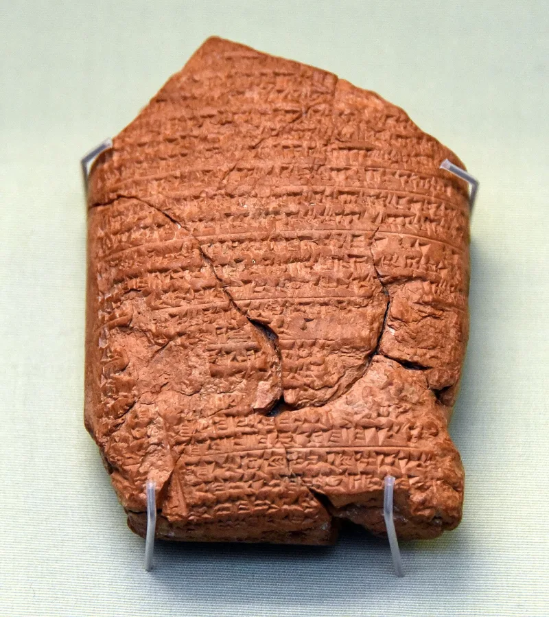
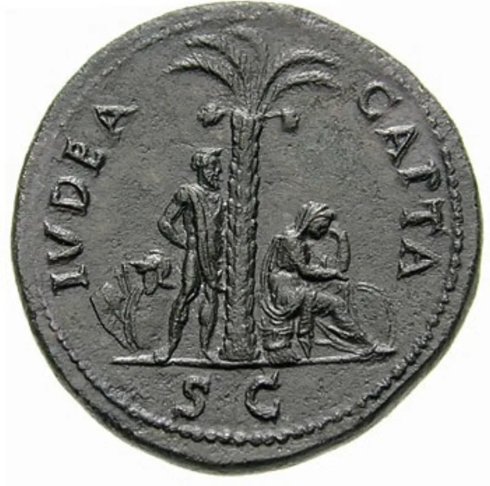

The text settles it — but concede the grievance first, or nothing will be heard.
If the curses of Deuteronomy 28 are still running today, then whoever is suffering them now must be Israel. So the real question is historical: does the Bible itself say these curses already came?
It says so more than once. 2 Kings 17:7-23 explains the Assyrian deportation as covenant judgment.
2 Chronicles 36:15-21 says the same about Babylon. Lamentations describes the siege horrors of Deuteronomy 28:53-57 as someone who watched them.
Daniel 9 and Nehemiah 9 both pray about it as past.
Partial is not full, they say. Babylon brought captivity, but not ships, not chattel sale, not a market with no buyers.
And Deuteronomy 28:64 says scattered "among all people, from the one end of the earth even unto the other" — which Babylon was not. The northern tribes, they add, never came home.
2 Chronicles 30:11 and 34:9 show northerners already living in Judah before the Babylonian exile. So the north was not simply lost.
And the return provisions of the same covenant were reported as fulfilled by the writers themselves.
The text settles this one. But the "north never returned" point is a real argument and deserves respect, not a brush-off.
"Does the Bible ever say these curses came? Let's read 2 Kings 17 together."



Babylon brought no ships and no auction, and the northern ten tribes never came home.
The camps answer that partial fulfilment is not full fulfilment. Daniel confesses over Babylon, and Babylon delivered captivity. It did not deliver ships, or chattel sale, or a market with no buyer.
The Assyrian and Babylonian exiles were regional. Deuteronomy 28:64 says scattered 'among all people, from the one end of the earth even unto the other.' A march to Mesopotamia does not satisfy that. The northern ten tribes never returned with Ezra, so the register in Ezra 2 documents Judah and Benjamin only. That leaves most of Israel unaccounted for. Where did they go?
James writes 'to the twelve tribes which are scattered abroad' (James 1:1), long after the return. To them that proves the scattering persisted. Jesus is sent 'to the lost sheep of the house of Israel' (Matthew 15:24). Some camps also cite 2 Esdras 13:40-45, which describes the tribes journeying to a far country.
The text settles it. But the 'north never returned' point deserves a real answer.
The reply is a real argument. The north-never-returned point deserves respect rather than a brush-off. But it does not survive the text.
2 Chronicles 30:11 and 34:9 show northerners already living in Judah before the fall. Anna is 'of the tribe of Aser' in Luke 2:36, seven centuries after Assyria. So northern tribal identity was preserved and known in first-century Judea. It was not lost to Africa.
Daniel and Nehemiah are the decisive witnesses. Both treat the Mosaic curse as poured out in their own day. Both plead the Deuteronomy 30 return clause as live. The 2 Esdras appeal is self-defeating, since that book is not in the Hebrew canon the movement otherwise insists upon.